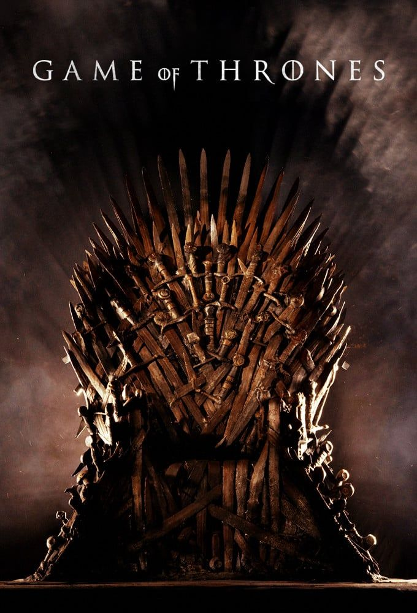

★·.·.·★ mis series favoritas ★·.·.·★
The Walking Dead
The Walking Dead es una serie de televisión estadounidense de drama horror postapocalíptico de AMC basada en la serie de cómics homónima de Robert Kirkman, Tony Moore y Charlie Adlard. La serie presenta un gran elenco como supervivientes de un apocalipsis zombi, tratando de mantenerse con vida bajo la amenaza casi constante de ataques de los zombis sin conciencia, coloquialmente conocidos como «caminantes». Sin embargo, con la caída de la humanidad, estos supervivientes también enfrentan conflictos con otros supervivientes que han formado grupos y comunidades con sus propios conjuntos de leyes y morales, lo que a menudo conduce a conflictos hostiles entre las comunidades humanas.
Game of thrones
Game of Thrones (GOT) es una serie de televisión de drama y fantasía medieval desarrollada por David Benioff y D. B. Weiss y producida por la cadena HBO. Su argumento está inspirado en la serie de novelas Canción de hielo y fuego, escrita por el estadounidense George R. R. Martin, y relata las vivencias de un grupo de personajes de distintas casas nobiliarias en el continente ficticio de Poniente para tener el control del Trono de Hierro y gobernar los siete reinos que conforman el territorio.
Euphoria
Euphoria es una serie de televisión estadounidense de drama adolescente, basada en la serie israelí del mismo nombre creada por Ron Leshem y Daphna Levin. Se estrenó en HBO el 16 de junio de 2019. Euphoria, sigue a «un grupo de estudiantes de secundaria mientras navegan por las drogas, el sexo, la prostitución, la identidad, el trauma, las redes sociales, el amor y la amistad.